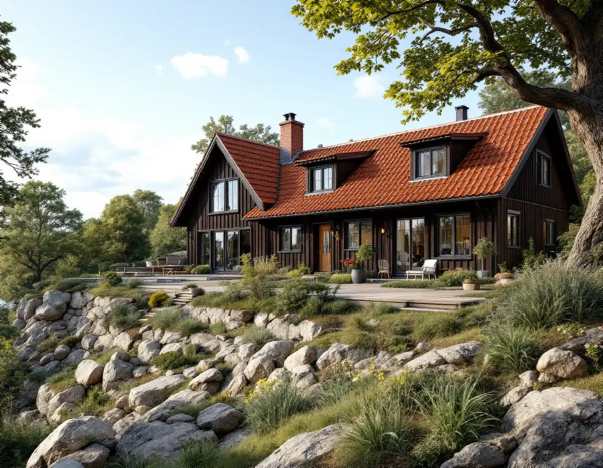
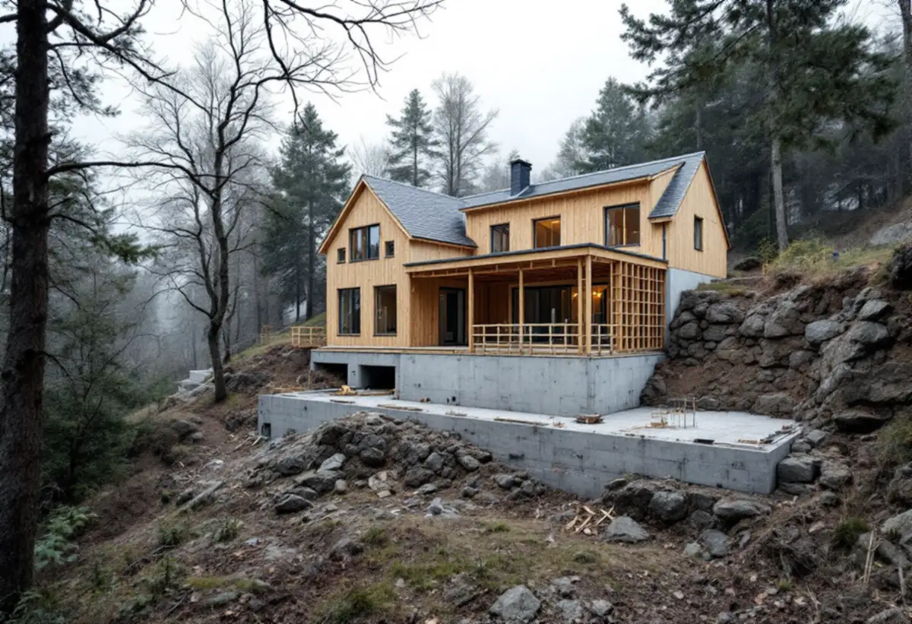

Tomt och karta
Vi besöker tomten och kontrollerar stadens karta, detaljplanen och kulturmiljöprogrammet.
Som byggföretag på Lidingö bygger vi till, renoverar och bygger nytt på villatomter, med en kontakt för hela projektet. På ön avgör kulturmiljöprogrammet, stadens markering för utökad lovplikt och den kuperade terrängen ofta mer än storleken på det du vill bygga.

Villabyggandet på Lidingö tog fart 1906, när ingenjören Hjalmar Arwin bildade AB Lidingö Villastad. Fyra år senare stod 293 villor klara, och Per Olof Hallmans stadsplan antogs 1913. Samma år som Arwin startade köpte Allan Abenius Brevik, där villastaden växte fram parallellt. Kärnan i de här områdena är hus från ungefär 1905–1930, och i Brevik har villastaden sedan kompletterats med villor, framför allt på 1940–60-talen.
Efterkrigstiden gav radhusbyarna. Mölna radhusby, ritad av Nils Tesch, byggdes 1960–62 med fyrtio radhuslägenheter i sju längor. I västra Käppala tillkom närmare hundra radhus och kedjehus 1979, och Gåshaga förvandlades mellan 1999 och 2009 från varv och fritidshus till ett bostadsområde. Varje område har sina egna material – rött lertegel, skiffer, kopparplåt eller betongpannor – och det är dem en tillbyggnad ska möta.

Sedan den 1 december 2025 får ett en- eller tvåbostadshus byggas till med högst 30 kvadratmeter utan bygglov, och ett komplementbostadshus på upp till 30 kvadratmeter och 4 meter är lovfritt inom detaljplan, med en gemensam gräns på 45 kvadratmeter för tomtens lovfria komplementbyggnader. På Lidingö är undantagen ovanligt viktiga. Lidingö stad skriver att utökad lovplikt gäller för de flesta byggnadsåtgärder inom särskilt kulturhistoriskt värdefulla områden, och att de syns som ett blått lager i stadens webbkarta. Är fastigheten gulmarkerad kan det finnas värden som behöver bedömas.
Stadens kulturmiljöprogram antogs av kommunfullmäktige den 16 december 2024. Det är ett kunskapsunderlag och inte juridiskt bindande, men det används vid bygglovsprövningen. För byggnadsminnen, som radhusen på Canadastigen, är det Länsstyrelsen som prövar ändringar.
Lovfritt är inte detsamma som fritt fram. Även en tillbyggnad utan lov kan kräva anmälan och startbesked om den påverkar bärande konstruktion eller får vatten, avlopp eller ventilation. För åtgärder som inte kräver lov går det dessutom att söka ett frivilligt bygglov och få besked i förväg om att projektet följer reglerna.
Lidingö är kuperat, med stora bergsryggar och tydlig skärgårdsterräng kring Gåshaga, Killinge och Käppala. Mölna radhusby ligger på en högplatå, flera villor i Brevik står i souterräng och många tomter i villastäderna har stödmurar och terrasser. För en tillbyggnad betyder det att grunden ofta är den största frågan: ska huset stå på berg, på plintar eller på en platta som kräver schaktning?
Inom detaljplan krävs marklov om markens höjd ändras mer än en halv meter. Vi planerar därför grunden efter terrängen och undviker stora ingrepp där det går. Branta tomter påverkar också hur material och ställning kommer fram, något vi bedömer vid besöket.
I Lidingö villastad har de äldre villorna höga tak med rött lertegel, i Brevik ligger tegel, skiffer eller plåt på sadeltaken och i Mölna radhusby är tak- och gavelsprången avtäckta med koppar. En tillbyggnad som ska bli godkänd, och som ska se ut att ha funnits där länge, behöver därför ofta samma takmaterial, samma takfot och en fasad som möter originalet.
Vi tar fram förslag där tillbyggnaden underordnar sig huset och där material och detaljer går att motivera i en ansökan. Ska huset också renoveras i samma veva samordnar vi det i en och samma entreprenad, se villarenovering. Mer om ytan du kan vinna finns under tillbyggnad och attefallshus, och om hur total entreprenad fungerar under byggfirma i Stockholm.
Vi besöker tomten och kontrollerar stadens karta, detaljplanen och kulturmiljöprogrammet.
Skiss med material och placering som passar huset och området.
Arbete, material och vad som ger ROT-avdrag redovisas tydligt.
Vi tar fram underlag och väntar in startbesked där det krävs.
Grundläggning anpassas till berg och lutning, sedan stomme, tak och installationer.
Gemensam slutgenomgång och dokumentation av det som byggts.
Du kan få rotavdrag med 30 procent av arbetskostnaden, högst 50 000 kronor per person och år och högst 75 000 kronor tillsammans med rutavdrag. Avdraget gäller reparation och underhåll samt om- och tillbyggnad, det senare bara på ett hus som är äldre än fem år. Material, arkitekt, bygglovshandlingar och besiktningsman ingår inte.
En tillbyggnad räknas om någon sida sitter ihop med husets yttervägg till minst 75 procent, medan ett nytt fristående hus på tomten inte ger avdrag. Vi drar avdraget direkt på fakturan.
Grunden på kuperade tomter, krav på material som skiffer, lertegel eller koppar och hur svårt det är att få fram material och ställning brukar påverka mest. Därefter kommer storlek, installationer och ytskikt. Vi kommer ut gratis och lämnar ett skriftligt kostnadsförslag.
Total entreprenad för villan.
Byggfirma →Takbyte, takbesiktning och plåtarbeten.
Takläggare i Lidingö →Brevik, Mölna och Käppala.
Takrenovering i Lidingö →Villastäderna och Brevik på Lidingö.
Fönsterbyte på Lidingö →Plåt i vind och värdefulla miljöer.
Plåtslagare på Lidingö →